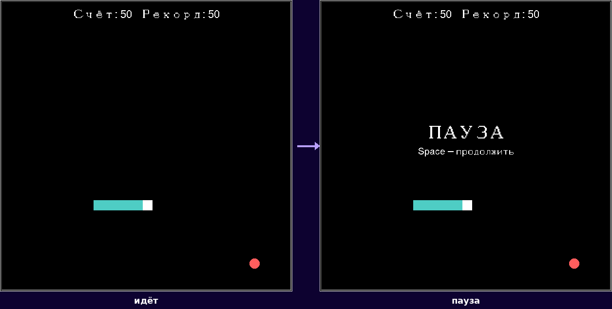

Pause / Resume
Пауза замораживает модель на месте — возобновление продолжает ту же игру, не начинает новую.
Пауза останавливает тики, а не рисует поверх бегущей игры

Клавиша Space переключает игру между RUNNING
и PAUSED:
def toggle_pause(self):
if self.state.status is GameStatus.RUNNING:
self._generation += 1 # инвалидирует уже запланированный тик немедленно
self.state.status = GameStatus.PAUSED
self._show_overlay("ПАУЗА", "Space — продолжить")
elif self.state.status is GameStatus.PAUSED:
self._generation += 1 # новое поколение — ровно одна свежая цепочка тиков
self.state.status = GameStatus.RUNNING
self._clear_overlay()
self._schedule_next_tick()toggle_pause() не трогает state.snake, state.score или state.food — меняется только status. Возобновление продолжает ту же самую игру с того же места, а не начинает новую.Почему одной проверки status недостаточно
screen.ontimer(callback, delay_ms) только ПЛАНИРУЕТ будущий
вызов — сам факт, что status сменился на
PAUSED, никак не удаляет уже запланированный
callback из очереди Tkinter: он всё ещё будет вызван, просто
ничего полезного не сделает, если внутри проверить статус. Это почти работает — но не
совсем, и разница проявляется именно там, где её сложнее всего заметить: что если
возобновление (Resume) произойдёт РАНЬШЕ, чем сработает вызов
тика, запланированный ещё до паузы?
status is RUNNING внутри тика эту гонку не ловит: к моменту, когда старый тик наконец срабатывает, игра уже снова RUNNING — проверка проходит, и тик как ни в чём не бывало планирует продолжение.Поэтому toggle_pause() увеличивает
self._generation на КАЖДОМ переключении — и при постановке на
паузу, и при возобновлении, — а не только при перезапуске. Пауза инвалидирует
запланированный тик сразу, в момент нажатия Space, а не
полагается на то, что он сам себя узнает, когда наконец сработает. Возобновление получает
собственное новое поколение и планирует ровно один свежий тик — какая бы цепочка ни
существовала раньше, она уже мертва.